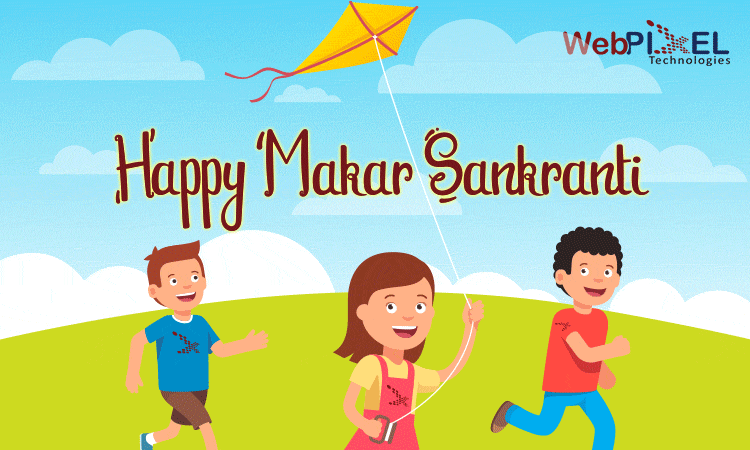

|
INDIAN FESTIVAL AND TOURISM PVT.LTD |
 |

Makar Sankranti
Makar Sankranti or Uttarayan or Maghi or simply Sankranti, is a festival day in the Hindu calendar, dedicated to the deity Surya (sun). It is observed each year the day Sun enters the Capricorn zodiac which corresponds with the month of January as per the Gregorian calendar.[3][4][5] It marks the first day of the sun's transit into Makara rashi (Capricorn), marking the end of the month with the winter solstice and the start of longer days.[3][6]
Makar Sankranti[7] is one of the few ancient Indian festivals that has been observed according to solar cycles, while most festivals are set by the lunar cycle of the lunisolar (चंद्र – सौर) Hindu calendar.[6] Being a festival that celebrates the solar cycle, it almost always falls on the same Gregorian date every year (January 14),[4] except in some years when the date shifts by a day for that year (January 15).[8] As a result, it can fall on different date of the Hindu calendar each year.
The festivities associated with Makar Sankranti are known by various names Magh Bihu in Assam, Maghi (preceded by Lohri) in Punjab, Haryana and Himachal Pradesh, popular amongst both the Hindus and Sikhs, Sukarat in central India, Thai Pongal in Tamil Nadu, Uttarayan in Gujarat, Uttarakhand and Uttar Pradesh, Ghughuti in Uttarakhand, Makara Sankranti in Odisha, Karnataka, Maharashtra, Goa, West Bengal (also called Poush Sankranti), Uttarakhand and Uttar Pradesh (also called Khichidi Sankranti) or as Sankranthi in Andhra Pradesh and Telangana,[9][10] Happy Maghe Sankrat (Nepal), Happy Songkran (Thailand), Happy Thingyan (Myanmar), Happy Mohan Songkran (Cambodia), Happy Shishur Sankrat (Kashmir).
Makar Sankranti is observed with social festivities such as colorful decorations, rural children going house to house, singing and asking for treats in some areas,[11] melas (fairs), dances, kite flying, bonfires and feasts.[10][12] The Magha Mela, according to Diana L. Eck (professor at Harvard University specializing in Indology), is mentioned in the Hindu epic Mahabharat.[13] Many observers go to sacred rivers or lakes and bathe in a ceremony of thanks to the sun.[13] Every twelve years (marking one complete revolution of Jupiter around the Sun) the Hindus observe Makar Sankranti with one of the world's largest mass pilgrimages, with an estimated to 100 million people attending the event.[13][14][15] At this event, then they say a prayer to the sun and bathe at the Prayaga confluence of the River Ganga and River Yamuna at the Kumbha Mela,[13] a tradition attributed to Adi Shankaracharya.[16]